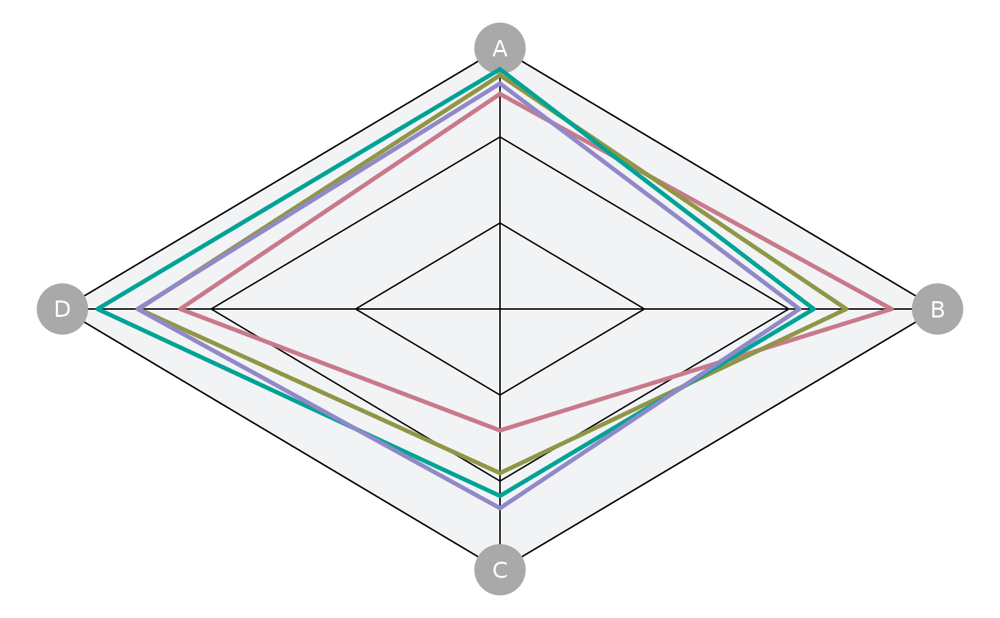
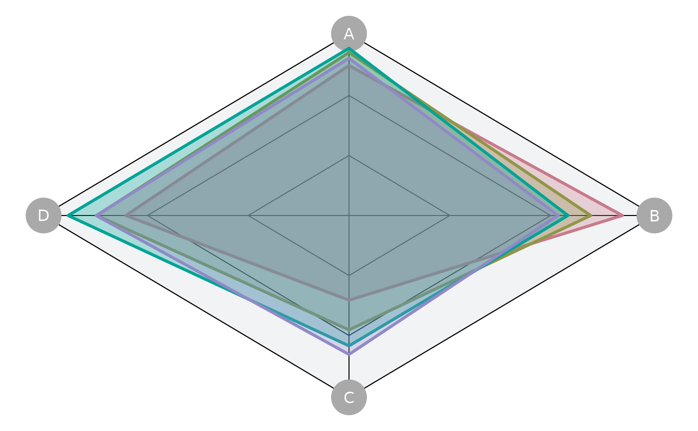
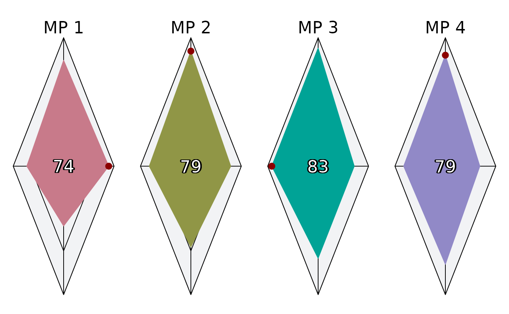
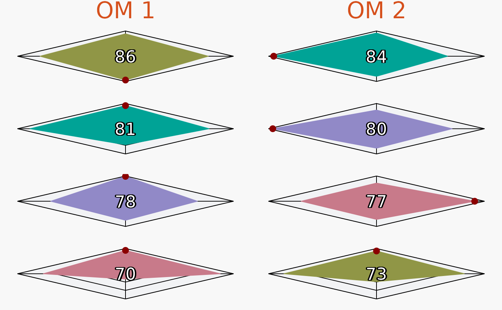

Plot Spider
plotSpider.RdA Spider or Radar plot
Usage
plotSpider(
slick,
byOM = FALSE,
byMP = FALSE,
incMean = TRUE,
incMax = TRUE,
relScale = FALSE,
col.om.title = "#D6501C",
cex.om.title = 2,
col.Mean = "white",
bg.Mean = "black",
grid.fill = "#f2f3f5",
grid.line = "black",
fill = byMP | all(byOM),
inc.grid = TRUE,
PI.labels = !(byMP | all(byOM)),
MP_label = "Code",
mp.lwd = 3,
alpha = 0.3,
ncol = 4,
PI.mean.cex = 2.2,
incMPtitle = byMP,
mplab.cex = 2.2,
max.pt.cex = 2,
max.pt.col = "darkred"
)Arguments
- slick
A
Slick-class()object- byOM
Logical Plot by OM? Otherwise mean over OMs
- byMP
Logical. Plot by MP? Otherwise all MPs together on one plot
- incMean
Logical. Include mean PI score in center?
- incMax
Logical. Include colored points indicating maximum PI values?
- relScale
Logical. Scale PI values between minimum (0) and maximum (1)?
- col.om.title
Color of the OM names/labels
- cex.om.title
Size of OM names/labels
- col.Mean
Color of mean value text
- bg.Mean
Background color of mean value text
- grid.fill
Color of fill for the spider grid
- grid.line
Color of lines for the spider grid
- fill
Logical Fill the spider plot?
- inc.grid
Logical. Include the grid?
- PI.labels
Logical Show PI labels?
- MP_label
Label to use for the MPs. Either
CodeorLabel.Descriptionworks as well, but you probably don't want to do that.- mp.lwd
Line width
- alpha
Alpha value for the fill
- ncol
Number of columns
- PI.mean.cex
Size of PI mean score text
- incMPtitle
Logical. Include MP label?
- mplab.cex
MP label size
- max.pt.cex
Max value point size
- max.pt.col
Max value point color
Examples
# Generate dummy values
nOM <- 2
nMP <- 4
nPI <- 4
values <- array(NA, dim=c(nOM, nMP, nPI))
# Note: PI values must be between 0 and 1, with 1 indicating better performance
pi_means <- runif(nPI, 0, 1)
for (om in 1:nOM) {
for (mp in 1:nMP) {
for (pi in 1:nPI) {
values[om, mp, pi] <- runif(1, pi_means[pi])
}
}
}
# Create and populate Object
spider <- Spider(Code=c('PI1', 'PI2', 'PI3', 'PI4'),
Label=c('Performance Indicator 1',
'Performance Indicator 2',
'Performance Indicator 3',
'Performance Indicator 4'),
Description = c('This is the description for PI 1',
'This is the description for PI 2',
'This is the description for PI 3',
'This is the description for PI 4'),
Value=values)
# Check
Check(spider)
#>
#> ── Checking: "Spider" ──
#>
#> ✔ Complete
# Add to `Slick` object
slick <- Slick()
Spider(slick) <- spider
# Plots
plotSpider(slick)
#> ℹ Note: `MPs` is empty. Using default MP names and colors

plotSpider(slick, fill=TRUE)
#> ℹ Note: `MPs` is empty. Using default MP names and colors

plotSpider(slick, byMP=TRUE)
#> ℹ Note: `MPs` is empty. Using default MP names and colors

plotSpider(slick, byOM=TRUE)
#> ℹ Note: `MPs` is empty. Using default MP names and colors
